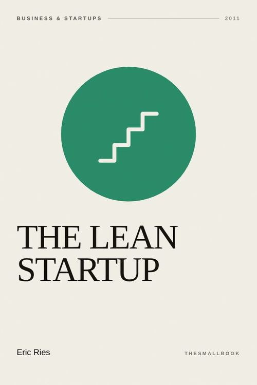
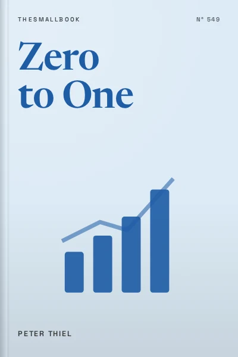

Library › The Lean Startup vs Zero to One
The Lean Startup vs Zero to One: Which Should You Actually Read?
Both books live on the same shelf: Business & Startups. Both are here to read, in full, right now. The Lean Startup (2011, Eric Ries) argues: A startup's only job is learning what customers actually want - faster than the money runs out.… Zero to One (2014, Peter Thiel) argues: Doing what we already know takes the world from 1 to n. Creating something new takes it from 0 to 1.…

The Lean Startup
Most startups fail not from bad technology but from building something nobody wants - executing a flawless plan toward a destination that doesn't exist. Ries (via Toyota's lean manufacturing + Steve Blank's customer development) reframes the startup as a learn
READ THE LEAN STARTUP FREE →
Zero to One
Every moment in business happens only once. The next Bill Gates won't build an operating system; the next Zuckerberg won't build a social network. Copying existing models takes the world from 1 to n - real value comes from creating something entirely new: goin
READ ZERO TO ONE FREE →⚖ The Straight Answer
Read The Lean Startup if you want how today's entrepreneurs use continuous innovation - build, measure,
Read Zero to One if you want notes on startups, or how to build the future - why copying never crea
The honest order for most readers: start with Zero to One for the base, then go deeper with the other. Both summaries are here, in 26 languages.
Every summary has it all: lessons, examples, action steps, audio in your language.
Use this list well
Where should I start? Start with The Lean Startup: A startup's only job is learning what customers actually want - faster than the money runs out.
Warnings from the Graveyard
Use this list well
Where should I start? Start with The Lean Startup: A startup's only job is learning what customers actually want - faster than the money runs out.